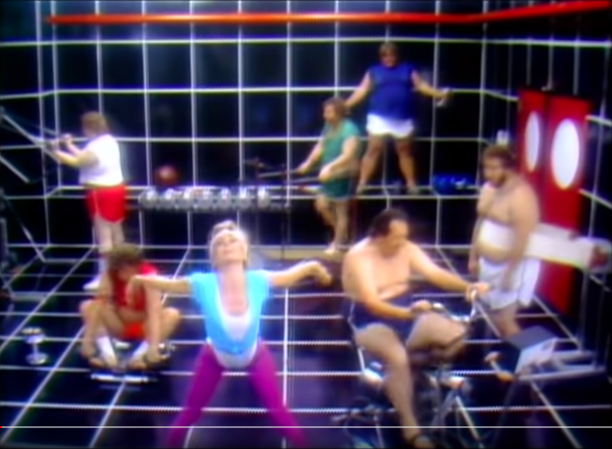
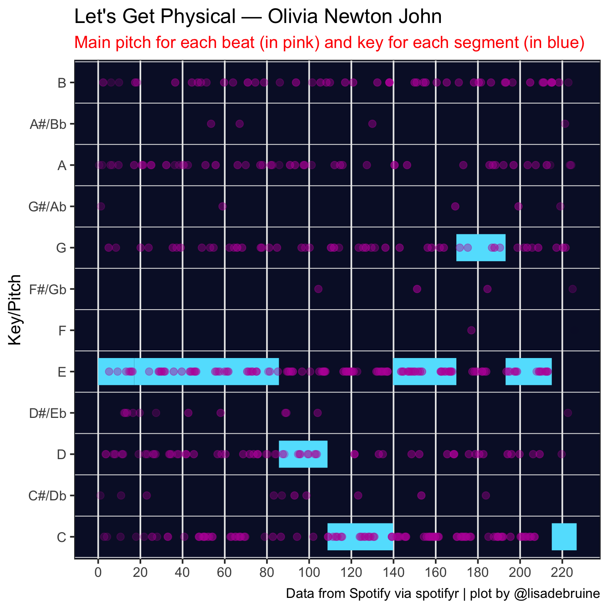

7 Physical
Every time I thought about today’s prompt, by brain started playing Let’s Get Physical by Olivia Newton John. If you haven’t watched the video, it’s a real 80s experience. I’m going to try to theme the plot after the video.

So I decided to adapt some code from a tutorial I wrote on spotifyr, which is based on a tutorial by Michael Mullarkey. You can check those tutorials for the setup details if you haven’t used spotifyr before.
7.1 Get song ID
This step requires access to spotify and you can get timed out if you try to access it too much, so I always save the result of calls to an API in scripts and set that code chunk to eval = FALSE so it doesn’t run every time I render this book.
Now I can search the tracks for “Physical”. I’ll choose the earliest release.
7.2 Song Analysis
Get the song analysis. It’s a list with a bunch of info.
-
metagives you a list of some info about the analysis. -
trackgives you a list of attributes, includingduration,loudness,end_of_fade_in,start_of_fade_out, andtime_signature. Some of this info was available in the artist table. -
bars,beats, andtatumsare tables with thestart,durationandconfidencefor each bar, beat, or tatum of music (whatever a “tatum” is). -
sectionsis a table with the start, duration, loudness, tempo, key, mode, and time signature for each section of music, along with confidence measures of each. -
segmentsis a table with information about loudness, pitch and timbre of segments of analysis, which tend to be around 0.2 seconds.
7.3 Pitches
The column pitches of the segments table has 12 values representing the degree of occurrence for each note in each time segment, so we have to unpack this a bit.
Pitch analysis
| start | duration | loudness_start | pitch |
|---|---|---|---|
| 0.000 | 0.488 | -28.812 | 9 |
| 0.488 | 0.359 | -25.662 | 9 |
| 0.847 | 0.204 | -24.822 | 8 |
| 1.051 | 0.256 | -24.402 | 1 |
| 1.307 | 0.573 | -21.224 | 8 |
| 1.880 | 0.483 | -23.087 | 9 |
Now I want to figure out the main pitch for each beat, so I need to somehow map the pitch table to the beat table. First, I need to work out the main segment in each beat.
Main pitch for each beat
seg <- song_analysis$segments %>%
select(seg_start = start, seg_dur = duration)
beat <- song_analysis$beats %>%
select(beat_start = start, beat_dur = duration)
main_seg_in_beat <- inner_join(seg, beat, by = character()) %>%
mutate(seg_end = seg_start + seg_dur,
beat_end = beat_start + beat_dur,
seg_in_beat = (seg_start <= beat_end) & (seg_end >= beat_start)) %>%
filter(seg_in_beat) %>%
rowwise() %>%
mutate(overlap = min(seg_end, beat_end) - max(c(seg_start, beat_start)),
pcnt_in_beat = overlap/beat_dur) %>%
group_by(beat_start) %>%
slice_max(order_by = pcnt_in_beat, n = 1) %>%
ungroup()
head(main_seg_in_beat)| seg_start | seg_dur | beat_start | beat_dur | seg_end | beat_end | seg_in_beat | overlap | pcnt_in_beat |
|---|---|---|---|---|---|---|---|---|
| 0.488 | 0.359 | 0.504 | 0.460 | 0.847 | 0.964 | TRUE | 0.344 | 0.747 |
| 1.051 | 0.256 | 0.964 | 0.473 | 1.307 | 1.437 | TRUE | 0.256 | 0.541 |
| 1.307 | 0.573 | 1.437 | 0.474 | 1.880 | 1.910 | TRUE | 0.443 | 0.936 |
| 1.880 | 0.483 | 1.910 | 0.469 | 2.363 | 2.380 | TRUE | 0.452 | 0.964 |
| 2.363 | 0.465 | 2.380 | 0.469 | 2.827 | 2.849 | TRUE | 0.448 | 0.954 |
| 2.827 | 0.446 | 2.849 | 0.474 | 3.274 | 3.322 | TRUE | 0.425 | 0.897 |
And then join this with the pitch analysis table to get a main pitch for each beat.
Pitch by beat
| start | duration | loudness_start | pitch |
|---|---|---|---|
| 0.488 | 0.359 | -25.662 | 9 |
| 1.051 | 0.256 | -24.402 | 1 |
| 1.307 | 0.573 | -21.224 | 8 |
| 1.880 | 0.483 | -23.087 | 9 |
| 2.363 | 0.465 | -15.020 | 11 |
| 2.827 | 0.446 | -21.016 | 0 |
7.4 Plot Pitch by Beat
7.5 Plot Key by Segment
I also wanted to map the key of each segment using a horizontal linerange, so I mapped it vertically first and flipped the coordinates.
7.6 Combine Plots
So to combine them, I need to move the data and mapping to the relevant geoms and swap the x and y coordinates for the pitch points.
7.7 80s Theme
Let’s remind ourselves of this monstrosity.
Code
# translate spotify's 0-11 to notes
pitch_key_vals <- c('C', 'C#/Db', 'D', 'D#/Eb', 'E', 'F',
'F#/Gb', 'G', 'G#/Ab', 'A', 'A#/Bb', 'B')
ggplot() +
geom_linerange(mapping = aes(ymin = start,
ymax = start + duration,
x = key),
data = song_analysis$sections,
size = 12,
color = "#60E1FE") +
coord_flip() +
geom_point(mapping = aes(y = start, x = pitch, alpha = loudness_start),
data = pitch_by_beat,
color = "#BB1DA8", size = 3,
show.legend = FALSE) +
scale_y_continuous(breaks = seq(0, 250, 20)) +
scale_x_continuous(breaks = 0:11,
labels = pitch_key_vals) +
scale_alpha(range = c(0, .6)) +
labs(x = "Key/Pitch",
y = NULL,
title = "Let's Get Physical — Olivia Newton John",
subtitle = "Main pitch for each beat (in pink) and key for each segment (in blue)",
caption = "Data from Spotify via spotifyr | plot by @lisadebruine") +
theme_bw(base_size = 16) +
theme(plot.subtitle = element_text(color = "red"),
panel.background = element_rect(fill = "#091131"),
panel.grid.major.y = element_blank(),
panel.grid.minor.x = element_blank()){fig-align=‘center’ fig-alt=‘Chart of Let’s Get Physical by Olivia Newton John, showing the main pitch for each beat (in pink) and key for each segment (in blue). The 80s visual theme is reminiscent of the gym from the music video for the song.’ width=100%}